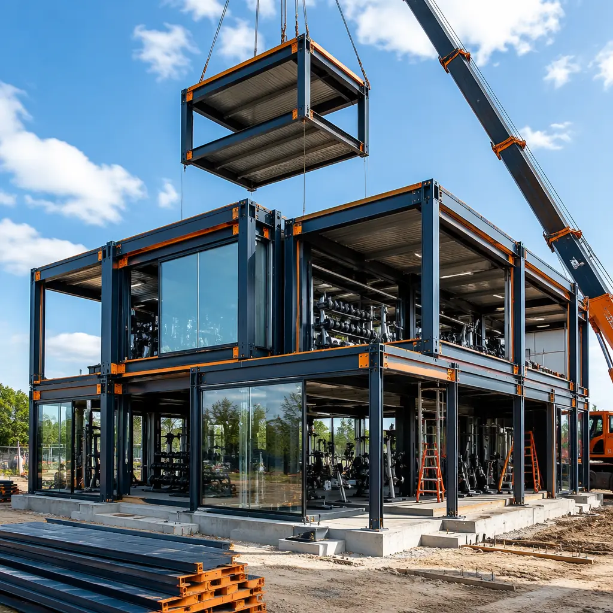
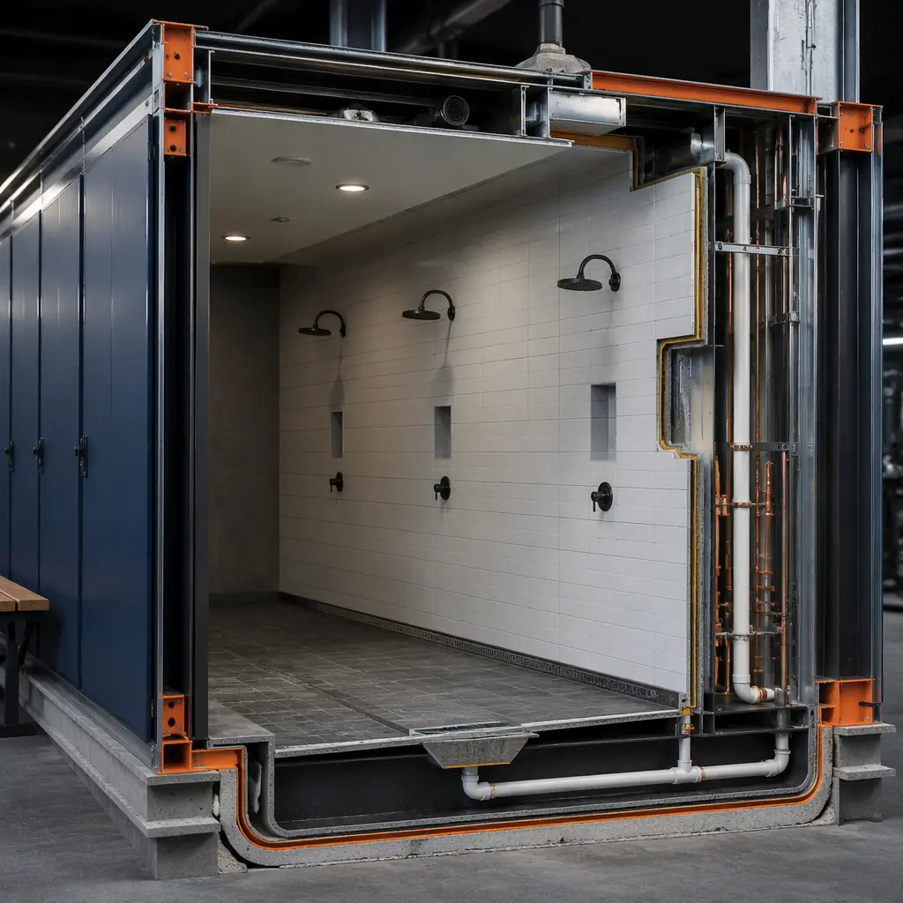
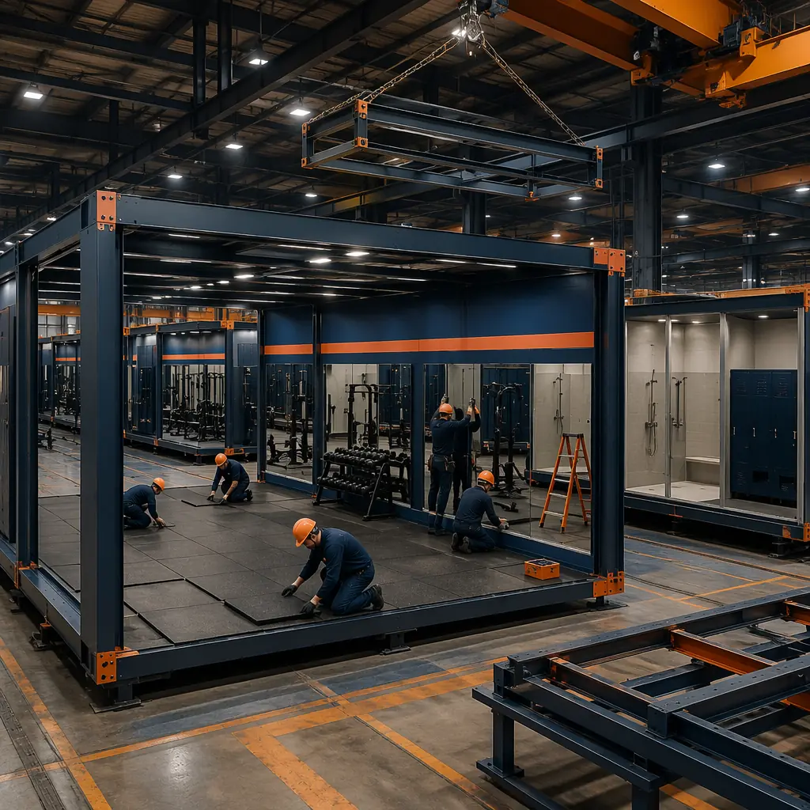

The fitness industry is in the middle of its most aggressive physical expansion since the boutique studio boom of 2015–2019. The International Health, Racquet & Sportsclub Association (IHRSA) reports that US health club memberships reached 72.9 million in 2025 (up from 62.5 million in 2019), and the number of fitness facilities grew to 41,370. But the construction side of this growth story is strained: a 20,000 sq ft Planet Fitness or Crunch Fitness location built with conventional construction takes 8–12 months from lease signing to grand opening, and the 5–7 month interior build-out phase is compressed into a landlord-mandated construction window that conventional methods struggle to meet. Modular gym construction compresses the build-out timeline from 5–7 months to 3–4 months by building the exercise floor modules, locker room wet areas, group fitness studios, and MEP systems in a factory while the base building landlord work (shell, storefront, utility stubs) proceeds simultaneously on site. For a fitness operator opening 50–100 locations annually, every month of accelerated occupancy on a 20,000 sq ft space delivers approximately $80,000–$120,000 in membership revenue — and across a 75-location annual expansion program, modular delivery recovers $9–$15 million in accelerated revenue that would otherwise be lost to construction schedule delays. For operators considering modular for commercial build-outs, see our guide to modular commercial buildings and our analysis of modular retail construction.

Why Gym Construction Struggles with Conventional Methods — And How Modular Addresses Each Barrier
Fitness facility construction faces four structural challenges that modular production directly addresses: the tension between open-span exercise floors and the mechanical density of ancillary spaces, the waterproofing complexity of locker rooms and wet areas, the acoustic isolation demands of group fitness studios adjacent to weight floors, and the compressed landlord construction windows that leave no margin for weather delays, trade sequencing gaps, or rework. Each of these challenges produces cost overruns and delayed openings in conventional gym construction that modular methods systematically eliminate.
Open-span exercise floors adjacent to dense mechanical spaces. A typical big-box gym floor plan allocates 60–70% of the total square footage to open-span exercise floor (cardio equipment, strength training zones, functional training turf, stretching areas) and the remaining 30–40% to dense ancillary spaces (locker rooms with 30–50 showers and toilet fixtures, group fitness studios, staff offices, juice bar, and mechanical/electrical rooms). The exercise floor requires clear spans of 40–60 feet with no interior columns interrupting equipment layouts, while the ancillary spaces require wall density, plumbing concentration, and HVAC zoning that is the opposite of open-span. In conventional construction, the structural engineer designs a steel moment frame for the open-span zone and metal stud bearing walls for the ancillary zone — two structural systems that must interface at a shared column line, creating a coordination point where steel tolerances (typically ±1/4 inch per 20 feet) meet metal stud tolerances (±1/8 inch per 8 feet). The resulting field-fit adjustments at this interface add 2–3 weeks to the framing schedule and generate change orders averaging $15,000–$25,000. In modular construction, both zones are built as factory-fabricated modules: the open-span module uses a steel moment frame with factory-welded connections tested ultrasonically before shipping, and the ancillary modules use steel-framed wall panels with plumbing rough-in completed and pressure-tested in the factory. The interface between them is a pre-engineered module-to-module connection, not a field-coordinated transition between different structural systems. For a detailed analysis of structural coordination in modular construction, see our guide to modular building design flexibility.
Locker room waterproofing is the #1 source of gym construction defects. A 20,000 sq ft big-box gym typically includes men's and women's locker rooms totaling 3,000–4,000 sq ft, with 30–50 showers, toilet partitions, lavatories, and changing areas. The shower area waterproofing is a multi-layer assembly: sloped concrete floor with 1/4-inch-per-foot fall to trench drains, a continuous waterproof membrane (sheet-applied PVC or fluid-applied polyurethane) extending 6 inches up all walls, cement backer board on shower walls with membrane continuity at all corners and pipe penetrations, and ceramic tile or epoxy flooring over the membrane. In conventional construction, this assembly is installed by a tile subcontractor working in a sequence that is entirely dependent on the plumber (shower valve rough-in complete), the framer (backer board installed), and the general contractor (sloped concrete floor poured and cured) completing their work first. Any delay by any upstream trade compresses the tile subcontractor's schedule, and the resulting time pressure produces corner membrane folds that leak, drain flashing that separates, and grout that cures improperly. Water intrusion into the wall cavity or floor assembly in a gym locker room is a $50,000–$150,000 remediation that typically requires demolition of finished surfaces, drying of the wall cavity (3–5 days with commercial dehumidifiers), and reinstallation of the waterproofing assembly — all while the gym is operational and members are using adjacent facilities. In modular construction, the locker room modules are built in the factory where the waterproof membrane, shower fixtures, floor slope, and drain connections are installed and flood-tested before the module ships. The factory flood test fills the shower pan with water to the overflow level, holds it for 24 hours, and verifies zero leakage with moisture meters placed at the module's floor-to-wall joints — a quality assurance step that no site-built gym construction schedule can accommodate. For additional insight on wet-area construction quality, see our analysis of factory quality control systems.

Group Fitness Studio Acoustic Isolation
The group fitness studio — used for cycling, HIIT, yoga, Pilates, and dance-based classes — generates sustained sound pressure levels of 90–105 dB (cycling with amplified instructor microphone and music) that must be contained within the studio to avoid disrupting the weight floor, the stretching area, and the front desk. The acoustic isolation requirement for a group fitness studio adjacent to an exercise floor is STC 55–60, which requires double-stud wall construction with 1-inch air gap, two layers of 5/8-inch Type X gypsum board on each side, and mineral wool insulation in the stud cavities — an assembly that costs 2.5–3× the standard metal stud partition used elsewhere in the gym. In conventional construction, the acoustic wall assembly is built on site by drywall subcontractors who must precisely maintain the 1-inch air gap between stud rows while installing the gypsum board layers with staggered joints on each layer — a level of precision that field framing crews, working under compressed big-box gym construction schedules, frequently fail to achieve. The result is acoustic flanking paths through the wall assembly — sound transmission through rigid connections between stud rows, through unsealed electrical box penetrations, and through gypsum board joints that align across layers — that reduce the effective STC from the designed 58 to an as-built 42–48. The gym opens, members complain about cycling class noise bleeding into the cardio area, and the owner pays $30,000–$50,000 for acoustic remediation that involves opening the walls, adding resilient channels, and sealing flanking paths. In modular construction, the acoustic wall assembly is built in the factory where the stud rows are precisely positioned, the mineral wool insulation is friction-fit without gaps, the gypsum board layers are staggered with automated screw patterns, and the completed module is tested for sound transmission in a factory acoustic test chamber before shipping. For building types with similar acoustic requirements, see our guide to modular K-12 school construction and our analysis of modular healthcare construction — both require comparable acoustic separation between adjacent spaces.

HVAC Design for High-Occupancy Fitness Spaces
Fitness facility HVAC design is fundamentally different from standard commercial HVAC. A 20,000 sq ft gym with 300–400 members during peak hours generates sensible heat loads of 25–35 BTU/sq ft from human metabolism (each person exercising at moderate intensity generates 600–800 BTU/hr of sensible heat), plus latent heat loads from respiration and perspiration that require 15–20 air changes per hour in the exercise floor zone to maintain 40–55% relative humidity — critical for member comfort and for preventing condensation on weight equipment that accelerates corrosion. The locker room zone requires separate HVAC with 100% exhaust (no return air) to manage humidity from 30–50 showers operating simultaneously, and the group fitness studio requires independent temperature control because class formats range from heated yoga (105°F, 40% RH) to cycling (65°F, high air velocity) to restorative yoga (75°F, low air velocity).
In conventional construction, this multi-zone HVAC design is installed by a mechanical subcontractor who must coordinate rooftop unit placement, ductwork routing through the ceiling cavity, and zone damper installation with the structural steel, fire sprinkler, and lighting trades. The exercise floor typically requires 2–3 rooftop units of 15–25 tons each, with exposed spiral ductwork distributing supply air at 10–12 feet above finished floor — an aesthetic choice that saves the cost of a dropped ceiling ($8–12/sq ft) but requires the ductwork installation to be visually precise because it is fully exposed to members. In modular construction, the rooftop units are pre-specified, the main trunk ductwork is factory-installed in the exercise floor modules with pre-cut branch duct connections at module interfaces, and the zone dampers are integrated into the module's control wiring before shipping. The result is an HVAC system that is 70–80% factory-installed, with only rooftop unit setting, final duct connections at module seams, and system commissioning remaining as field work. For fitness operators who have experienced HVAC change orders on conventional gym projects — averaging 8–12% of the mechanical contract value, driven by ceiling cavity conflicts discovered during installation — this factory-integrated approach eliminates the primary source of mechanical cost overruns. For more on MEP integration in modular buildings, see our analysis of BIM-to-factory digital workflows.
Cost Structure — What Gym Operators Actually Pay
Fitness facility construction costs vary by brand standard, level of finish, and regional labor rates, but the cost structure follows patterns that allow meaningful comparison between modular and conventional delivery methods. The following analysis uses a 20,000 sq ft big-box fitness center prototype (open-span exercise floor, men's and women's locker rooms with 40 showers total, two group fitness studios, staff area, juice bar, reception/check-in) as the reference case.
| Cost Category | Conventional ($) | Modular ($) | Difference |
|---|---|---|---|
| Interior build-out (20,000 sq ft at $75–105/sq ft) | 1,500,000–2,100,000 | 1,350,000–1,750,000 | −10–17% |
| Locker room waterproofing & finishes | 280,000–380,000 | 210,000–270,000 | −25–29% |
| HVAC (multi-zone, high-occupancy design) | 320,000–420,000 | 260,000–330,000 | −19–21% |
| Acoustic isolation (group fitness studios) | 80,000–120,000 | 65,000–90,000 | −19–25% |
| Total interior build-out cost | 2,180,000–3,020,000 | 1,885,000–2,440,000 | −14–19% |
The largest cost savings are concentrated in locker room waterproofing and HVAC — the two categories most affected by weather-dependent site installation quality, trade sequencing gaps, and field rework in conventional construction. For a comprehensive discussion of modular construction costs, see our 2026 pricing guide and our developer's guide to modular construction ROI.
Landlord Construction Windows — Why Speed Matters More Than Cost
For fitness operators leasing space in retail shopping centers, the landlord construction window is the binding constraint that determines project feasibility. A typical retail lease for a 20,000 sq ft gym space includes a "build-out period" of 120–180 days during which the tenant pays no rent (or reduced rent) while completing interior construction. Every day beyond the build-out period costs the operator full base rent ($15–$25/sq ft annually, or $25,000–$42,000/month for a 20,000 sq ft space) plus lost membership revenue. Conventionally built gyms in retail spaces exceed the landlord build-out period approximately 35–45% of the time, according to construction management data from the top five US fitness franchisors, with the average overrun being 8–12 weeks. An 8-week overrun on a 20,000 sq ft gym costs the operator approximately $50,000–$84,000 in rent penalties and $160,000–$240,000 in lost membership revenue — a $210,000–$324,000 total cost that equals 10–15% of the total construction budget.
Modular gym construction reduces the risk of landlord build-out overruns by compressing the on-site construction window to 3–4 months (vs 5–7 months conventional) and by shifting the schedule-critical path from weather-dependent site work to weather-independent factory production. The module fabrication happens in parallel with the landlord's base building work (demising walls, storefront glazing, utility stubs), and the on-site module installation, connection, and commissioning window is short enough to complete within a single season regardless of weather. For fitness operators who have experienced the financial impact of construction schedule delays on retail gym openings, modular delivery offers a risk-reduction proposition that is worth the delivery method evaluation regardless of the comparative hard-cost numbers. For guidance on construction permitting timelines, see our developer's guide to modular construction permitting and zoning.
Is Modular Right for Your Gym Expansion?
Modular gym construction is not the right solution for every project — but it is the right solution for a specific profile that represents the highest-growth segments of fitness industry construction: big-box gym operators (Planet Fitness, Crunch, EoS Fitness, VASA Fitness) expanding at 50–150+ locations annually and seeking construction delivery methods that can keep pace with real estate acquisition, boutique fitness franchisors (Orangetheory, F45, Club Pilates, CycleBar) standardizing studio formats across hundreds of franchise locations, and corporate and multi-family amenity gyms where the construction schedule must align with the broader project timeline rather than dictating it. The US fitness facility construction market exceeded $4.8 billion in 2025 and is projected to grow at 6.2% CAGR through 2030 (IBISWorld) — growth that is increasingly concentrated in retail shopping center build-outs where compressed landlord construction windows make conventional construction's schedule variability an unacceptable financial risk. For fitness operators who have watched conventional gym construction timelines stretch across multiple seasons and penalty clauses, modular delivery offers a structural alternative that aligns construction speed with the industry's demand for faster, more predictable facility openings.